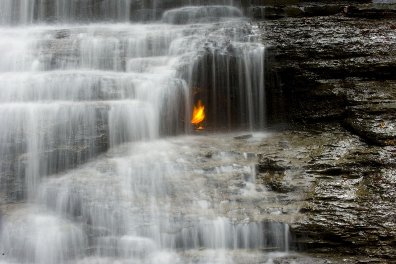
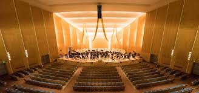
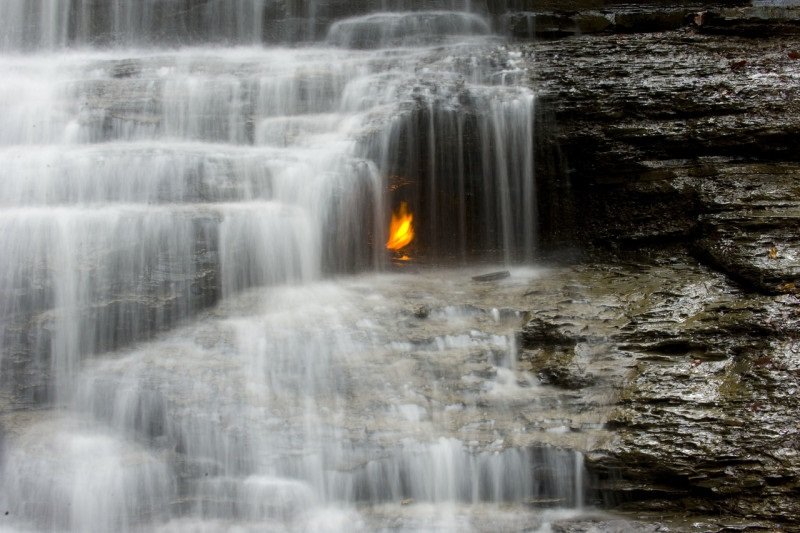
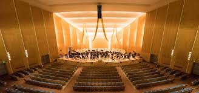
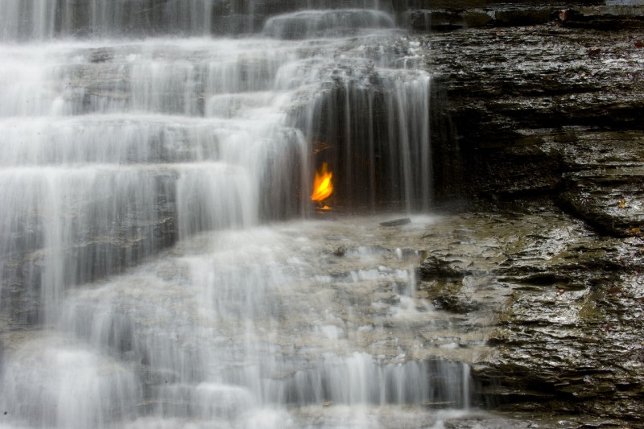
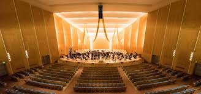

Buffalo is the second largest city in the U.S. state of New York and county seat of Erie County. It lies in Western New York at the eastern end of Lake Erie, at the head of the Niagara River on the Canadian border. With a population of 278,349 according to the 2020 census, Buffalo is the second-most populous city in New York State after New York City, and the 81st-most populous city in the U.S. Buffalo is the primary city of the Buffalo–Niagara Falls metropolitan area, which had an estimated population of 1.1 million in 2020, making it the 49th-largest metro area in the U.S.
The city's cultural landmarks include the oldest urban parks system in the United States, the Buffalo AKG Art Museum, the Buffalo History Museum, the Buffalo Philharmonic Orchestra, Shea's Performing Arts Center, the Buffalo Museum of Science, and several annual festivals. Its educational institutions include the University at Buffalo, Buffalo State University, Canisius University, and D'Youville University. Buffalo is also known for its winter weather, Buffalo wings, and two major-league sports teams: the National Football League's Buffalo Bills and the National Hockey League's Buffalo Sabres.
Buffalo was ranked the seventh-best city in the United States to visit in 2021 by Travel + Leisure, which noted the growth and potential of the city's cultural institutions. The Albright–Knox Art Gallery is a modern and contemporary art museum with a collection of more than 8,000 works, of which only two percent are on display. With a donation from Jeffrey Gundlach, a three-story addition designed by the Dutch architectural firm OMA opened June 2023. Across the street, the Burchfield Penney Art Center contains paintings by Charles E. Burchfield and is operated by Buffalo State College. Buffalo is home to the Freedom Wall, a 2017 art installation commemorating civil-rights activists throughout history. Near both museums is the Buffalo History Museum, featuring artwork, literature and exhibits related to the city's history and major events, and the Buffalo Museum of Science is on the city's East Side.

